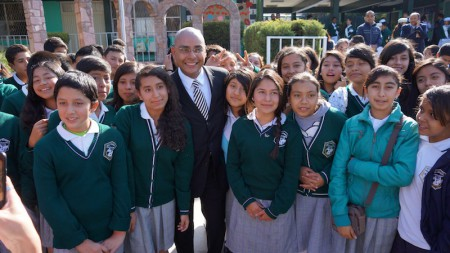

Escuela Primaria Benito Juarez
Primera escuela ecoamigable dentro del estado

Primera escuela en establecer botes de basura inteligentes, capaces de separar materiales como PET, VIDRIO, UNICEL, etc, ademas de contabilizar kilogramos de recicla
Primera escuela en establecer botes de basura inteligentes, capaces de separar materiales como PET, VIDRIO, UNICEL, etc, ademas de contabilizar kilogramos de recicla